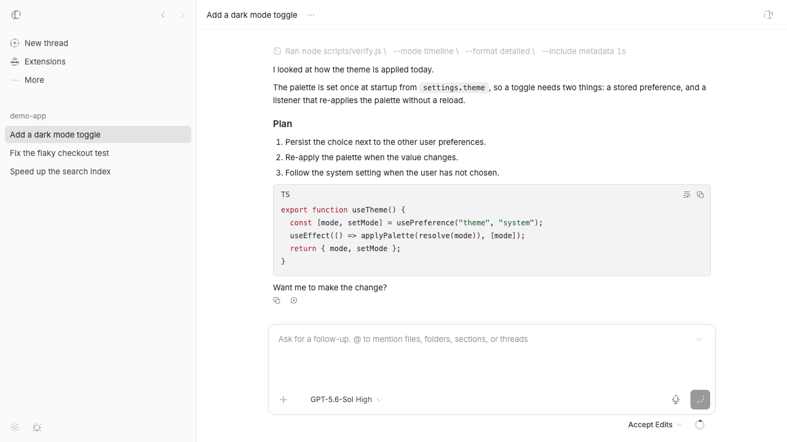
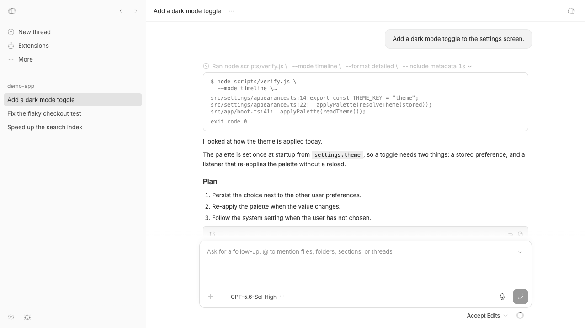

#3152 · Nested command disclosure remains collapsed
Verdict: REPRODUCED · Root-cause confidence: high
1. TL;DR
A completed command row can be opened while its command text remains independently limited to two lines. The behavior reproduced in a live isolated app: after one click the outer row was expanded, but the command control still reported aria-expanded="false", used a computed two-line clamp, and displayed 30px of 60px of content. A focused React regression failed for the same reason in two clean checkouts at the trusted main commit. The command block creates a second disclosure whose state starts collapsed every time the outer row renders it.
2. Claims vs findings
| Claim | Status | Evidence |
|---|---|---|
| One click can reveal command output without revealing the whole command. | Verified | The live row showed its output while the command remained a two-line control with aria-expanded="false". |
| A second click on the command reveals all of it. | Verified | The second click changed the nested control to aria-expanded="true", removed the computed clamp, and increased its visible height from 30px to 60px. |
| The behavior is provider-specific. | Refuted | The repro used a provider-neutral TimelineCommandWorkRow served by the repository demo fixture. The affected component receives normalized timeline data. |
| The output itself is truncated. | Refuted | The output was present after the first click; only the command element had the clamp and independent disclosure state. |
3. Environment
- Trusted repository:
get-bb/bbat9d37385303baca6367ea210f8d2aed111adafbc0. - Host: macOS Darwin 25.6.0, arm64; Node
v22.22.3; pnpm9.15.0; Vitest4.1.1. - Frozen install completed in both checkouts. The initial repository build completed with 20/20 Turbo tasks successful.
- Live fixture: repository demo server on loopback port 45152 and Vite app on loopback port 45153. Only temporary checkout-local state was used; no provider process or user BB data was accessed.
4. Minimal reproduction
- At the trusted base commit, save the linked test as
apps/app/src/components/thread/timeline/TerminalOutputBlock.test.tsx. - Run:
cd apps/app pnpm exec vitest run --config vitest.config.ts src/components/thread/timeline/TerminalOutputBlock.test.tsx
- Expected:
Test Files 1 passed (1) Tests 1 passed (1)
- Actual:
AssertionError: expected <button type="button" …></button> to be null Received: <button aria-expanded="false" class="... max-h-[2lh] overflow-hidden ..." style="... -webkit-line-clamp: 2;"> Test Files 1 failed (1) Tests 1 failed (1)
Repro files: test, first clean run, second clean run.
Complete regression test
// @vitest-environment jsdom
import { cleanup, fireEvent, render, screen } from "@testing-library/react";
import { afterEach, expect, it } from "vitest";
import { ExpandableTimelineRow } from "./ExpandableTimelineRow";
import { TerminalOutputBlock } from "./TerminalOutputBlock";
afterEach(cleanup);
it("reveals the complete command with the outer timeline row", () => {
const commandLine = [
"$ run-task \\",
" --first-option alpha \\",
" --second-option beta \\",
" --third-option gamma",
].join("\n");
render(
<ExpandableTimelineRow
title={{
segments: [],
decorations: [],
tone: "default",
action: null,
plain: "Ran command",
}}
titleContent="Ran command"
renderBody={() => (
<TerminalOutputBlock commandLine={commandLine} output="done" />
)}
/>,
);
fireEvent.click(screen.getByRole("button", { name: "Ran command" }));
const renderedCommand = screen.getByText(
(_, element) =>
element?.childNodes.length === 1 && element.textContent === commandLine,
);
expect(renderedCommand.closest("button")).toBeNull();
expect(renderedCommand.className).not.toContain("max-h-[2lh]");
expect(renderedCommand.style.WebkitLineClamp).toBe("");
});
Live browser evidence


clientHeight=30, scrollHeight=60, aria-expanded=false, and -webkit-line-clamp:2.Second clean verification
A second detached checkout was created at the exact base SHA. Before adding the test, git status --short was empty. It completed a separate frozen install, received the same test file, and failed at the same assertion with the same independently collapsed command button. No report claim required correction after the second run.
5. Root cause
The outer row owns expansion through ExpandableTimelineRow's isExpanded state and toggle. That state only controls whether the row body is rendered.
Inside that body, TerminalOutputBlock wraps the command in ExpandableLine and supplies a two-line clamp plus a separate expanded scroll style. The clamp itself is defined at lines 23–27.
<ExpandableLine
collapsedClassName="max-h-[2lh] overflow-hidden ..."
collapsedStyle={COMMAND_LINE_CLAMP_STYLE}
expandedClassName="overflow-auto ..."
>
{commandLine}
</ExpandableLine>
ExpandableLine initializes its own isExpanded state to false and changes it only from its own click handler. The outer click therefore mounts a fresh inner control in the collapsed state. Nothing propagates the row's expansion into that state, so a second click is structurally required.
6. Proposed fix (first principles)
Make the outer timeline row the only disclosure. Render the command as a non-interactive, fully visible block when the body is mounted, retaining the existing maximum-height and overflow classes for exceptionally long commands. Remove the command-only clamp constant and ExpandableLine import. Keep ExpandableLine itself because other UI surfaces still use its independent disclosure behavior. The focused test should then pass without changing timeline data, provider translation, or public contracts.
7. Related issues
No linked pull request or directly related issue was present in GitHub metadata at investigation time.
8. Appendix
The issue title, body, comments, and links were treated as untrusted claims. No linked URL, code, patch, branch, or command was executed.
Commands run
git fetch --force https://github.com/get-bb/bb.git main:refs/remotes/origin/main pnpm install --frozen-lockfile --prefer-offline pnpm exec turbo run build pnpm exec vitest run --config vitest.config.ts src/components/thread/timeline/TerminalOutputBlock.test.tsx pnpm --filter @bb/demo-server exec wrangler dev --port 45152 --ip 127.0.0.1 BB_DEV_APP_PORT=45153 BB_SERVER_PORT=45152 BB_DEV_APP_HOST=127.0.0.1 pnpm --filter @bb/app dev
Observed live values after the first click
{
"tag": "BUTTON",
"ariaExpanded": "false",
"webkitLineClamp": "2",
"clientHeight": 30,
"scrollHeight": 60
}